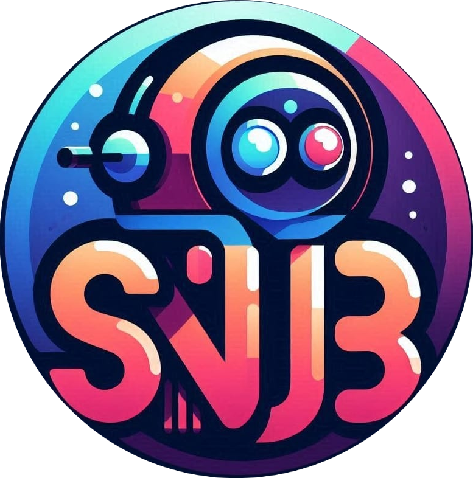
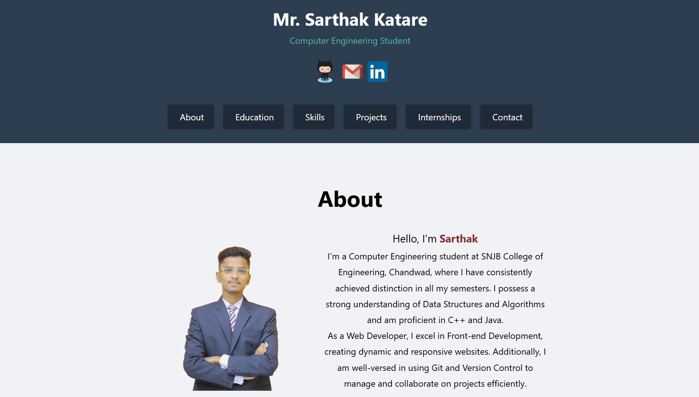
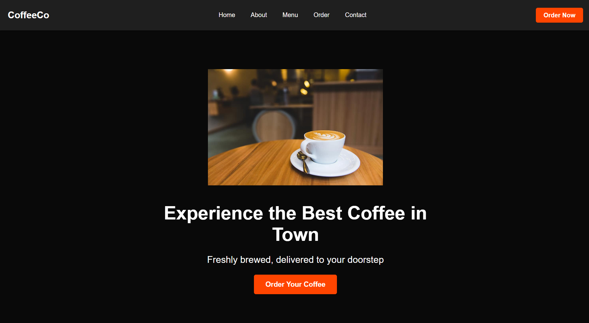
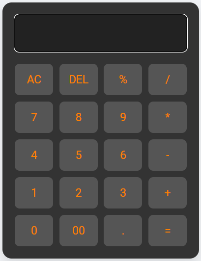

Mr. Sarthak Katare
Computer Engineering Student
Computer Engineering Student
Hello, I'm Sarthak
I'm a Computer Engineering student at SNJB College of Engineering,
Chandwad, where I have consistently achieved distinction in all my
semesters. I possess a strong understanding of Data Structures and
Algorithms and am proficient in C++ and Java.
As a Web
Developer, I excel in Front-end Development, creating dynamic and
responsive websites. Additionally, I am well-versed in using Git and
Version Control to manage and collaborate on projects efficiently.
SNJB's Late Sau Kantabai Bhavarlalji Jain College of Engineering, Chandwad Nashik
2022-26 at Present
Current SGPA : 9.18
K.B. Rohamare Junior College, Chasnali Kopergaon
2019 - 2022
12th (Senior Secondary Examination) : 81.33%
Ashadeep English Medium School, Suregaon Kopergaon
10th (Secondary Examination) : 83%

• Created an AI chatbot for SNJB's college using Python, HTML, CSS,
and Gemini AI for information and broad question-answering.
•
Learned Google Generative AI, JSON, HTML/CSS, and led a team of four
in a collaborative project.

• Developed a personal portfolio website using HTML, CSS.
•
Implemented a responsive design and added animations using CSS.

• Creating a landing page using HTML, CSS, focusing on creative
design elements.
• This project enabled me to practice creating
columns, organizing sections, arranging content, and integrating
headers and footers, enhancing my skills in web development and
design.

• Creating a basic calculator using HTML, CSS, and JavaScript.
•
Implement an interactive interface with buttons for basic arithmetic
operations like addition, subtraction, multiplication, and division.

June 2024 - Present
As a web development intern at Codsoft, I excelled in HTML, CSS, and
JavaScript through projects like creating a personal portfolio,
designing impactful landing pages, and developing a functional
calculator application.
Utilizing GitHub for version control
and collaboration, I gained practical skills essential for modern
web development.
Download Resume : Click Here
Email: kataresarthak001@gmail.com
Phone: +91 7057 2416 24